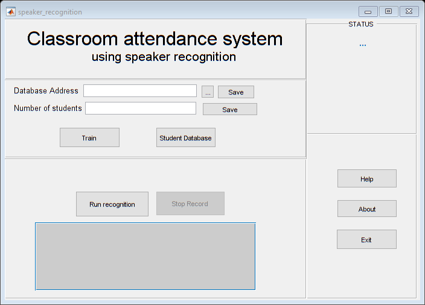

function varargout = speaker_recognition(varargin)
gui_Singleton = 1;
gui_State = struct('gui_Name', mfilename, ...
'gui_Singleton', gui_Singleton, ...
'gui_OpeningFcn', @speaker_recognition_OpeningFcn, ...
'gui_OutputFcn', @speaker_recognition_OutputFcn, ...
'gui_LayoutFcn', [] , ...
'gui_Callback', []);
if nargin && ischar(varargin{1})
gui_State.gui_Callback = str2func(varargin{1});
end
if nargout
[varargout{1:nargout}] = gui_mainfcn(gui_State, varargin{:});
else
gui_mainfcn(gui_State, varargin{:});
end
function speaker_recognition_OpeningFcn(hObject, eventdata, handles, varargin)
handles.output = hObject;
guidata(hObject, handles);
function varargout = speaker_recognition_OutputFcn(hObject, eventdata, handles)
varargout{1} = handles.output;
global todayPresent;
global presentTodayData;
todayPresent=0;
presentTodayData=datetime('today');
presentTodayData=strcat(datestr(presentTodayData),'.csv');
function helpButton_Callback(hObject, eventdata, handles)
open('Help.docx');
function pushbutton2_Callback(hObject, eventdata, handles)
open('about.txt');
function recogRun_Callback(hObject, eventdata, handles)
set(handles.stReg, 'Visible', 'Off');
set(handles.stRegOutput, 'Visible', 'Off', 'String', 'YES', 'ForegroundColor', 'green');
set(handles.stID, 'Visible', 'On');
set(handles.stIDOutput, 'Visible', 'Off', 'String', '', 'ForegroundColor', 'green');
set(handles.recogRun, 'string', 'Run again', 'ForegroundColor', 'blue', 'enable', 'on');
set(handles.clAtt, 'Visible', 'Off');
set(handles.clAttTot, 'Visible', 'Off', 'String', '', 'ForegroundColor', 'green');
set(handles.recogRun, 'string', 'running', 'enable', 'off');
set(handles.stopRec, 'string', 'Stop', 'enable', 'on');
global recObj;
recObj=audiorecorder(44100, 8, 2);
record(recObj);
function trainButton_Callback(hObject, eventdata, handles)
k = 16;
global code;
global n;
global folder_name;
tDir=folder_name;
for i = 1:n
file = sprintf('%ss%d.wav', tDir, i);
fprintf(file);
[s, fs] = audioread(file);
v = mfcc(s, fs);
code{i} = vqlbg(v, k);
end
set(handles.statusText, 'String', 'Training Complete', 'ForegroundColor', 'green');
function databaseButton_Callback(hObject, eventdata, handles)
open('database.txt');
function exitButton_Callback(hObject, eventdata, handles)
close all;
function folderAddress_Callback(hObject, eventdata, handles)
function folderAddress_CreateFcn(hObject, eventdata, handles)
if ispc && isequal(get(hObject,'BackgroundColor'), get(0,'defaultUicontrolBackgroundColor'))
set(hObject,'BackgroundColor','white');
end
function saveLoc_Callback(hObject, eventdata, handles)
global folder_name;
set(handles.folderAddress, 'String', folder_name);
set(handles.statusText, 'String', 'Train location saved', 'ForegroundColor', 'red');
function pushbutton8_Callback(hObject, eventdata, handles)
global folder_name;
folder_name = uigetdir;
folder_name=strrep(folder_name, '\', '/');
folder_name=strcat(folder_name,'/');
function noStudentsEdit_Callback(hObject, eventdata, handles)
function noStudentsEdit_CreateFcn(hObject, eventdata, handles)
if ispc && isequal(get(hObject,'BackgroundColor'), get(0,'defaultUicontrolBackgroundColor'))
set(hObject,'BackgroundColor','white');
end
function noOfStudents_Callback(hObject, eventdata, handles)
global n;
n=str2num(get(handles.noStudentsEdit, 'String'));
set(handles.statusText, 'String', 'Student no. saved', 'ForegroundColor', 'blue');
function stopRec_Callback(hObject, eventdata, handles)
set(handles.recogRun, 'string', 'Recorded', 'ForegroundColor', 'blue', 'enable', 'on');
set(handles.stopRec, 'string', 'Stop', 'enable', 'off');
global recObj;
global fname;
global todayPresent;
global presentTodayData;
fname='record.wav';
stop(recObj);
[y, fs]=audioread(fname);
y=y(:,1);
dt=1/fs;
t=0:dt:(length(y)*dt)-dt;
figure;
plot(t,y);
title('Audio sample of student in time domain');
xlabel('Seconds');
ylabel('Amplitude');
figure;
plot(psd(spectrum.periodogram,y,'Fs',fs,'NFFT',length(y)));
myRecMat=getaudiodata(recObj);
audiowrite(fname, myRecMat, 44100);
global code;
file = sprintf(fname);
[s, fs] = audioread(file);
v = mfcc(s, fs);
distmin = inf;
k1 = 0;
for l = 1:length(code)
d = disteu(v, code{l});
dist = sum(min(d,[],2)) / size(d,1);
if dist < distmin
distmin = dist;
k1 = l;
end
end
if(k1==0)
set(handles.stReg, 'Visible', 'On');
set(handles.stRegOutput, 'Visible', 'On', 'String', 'NO', 'ForegroundColor', 'red');
set(handles.stID, 'Visible', 'On');
set(handles.stIDOutput, 'Visible', 'On', 'String', 'NOT FOUND', 'ForegroundColor', 'red');
else
T=csvread('database.csv');
IDNo=T(k1,2);
if(length(todayPresent)==1)
todayPresent(end+1)=IDNo;
CLAttended=T(k1,3)+1;
T(k1,3) = CLAttended;
set(handles.stReg, 'Visible', 'On');
set(handles.stRegOutput, 'Visible', 'On', 'String', 'YES', 'ForegroundColor', 'green');
set(handles.stID, 'Visible', 'On');
set(handles.stIDOutput, 'Visible', 'On', 'String', num2str(IDNo), 'ForegroundColor', 'green');
set(handles.recogRun, 'string', 'Run again', 'ForegroundColor', 'blue', 'enable', 'on');
set(handles.clAtt, 'Visible', 'On');
set(handles.clAttTot, 'Visible', 'On', 'String', num2str(CLAttended), 'ForegroundColor', 'green');
dlmwrite('database.csv',T,'precision',10);
dlmwrite(presentTodayData,todayPresent,'precision',10);
else
chProxy=ismember(IDNo, todayPresent);
if(chProxy==1)
set(handles.statusText, 'String', 'PROXY ALERT!!', 'ForegroundColor', 'red');
set(handles.clAttTot, 'Visible', 'On', 'String', 'PROXY ALERT!!', 'ForegroundColor', 'red');
set(handles.stRegOutput, 'Visible', 'On', 'String', 'PROXY ALERT!!', 'ForegroundColor', 'red');
set(handles.stIDOutput, 'Visible', 'On', 'String', 'PROXY ALERT!!', 'ForegroundColor', 'red');
else
todayPresent(end+1)=IDNo;
CLAttended=T(k1,3)+1;
T(k1,3) = CLAttended;
set(handles.stReg, 'Visible', 'On');
set(handles.stRegOutput, 'Visible', 'On', 'String', 'YES', 'ForegroundColor', 'green');
set(handles.stID, 'Visible', 'On');
set(handles.stIDOutput, 'Visible', 'On', 'String', num2str(IDNo), 'ForegroundColor', 'green');
set(handles.recogRun, 'string', 'Run again', 'ForegroundColor', 'blue', 'enable', 'on');
set(handles.clAtt, 'Visible', 'On');
set(handles.clAttTot, 'Visible', 'On', 'String', num2str(CLAttended), 'ForegroundColor', 'green');
dlmwrite('database.csv',T,'precision',10);
dlmwrite(presentTodayData,todayPresent,'precision',10);
end
end
end
clear recObj myRecMat;
